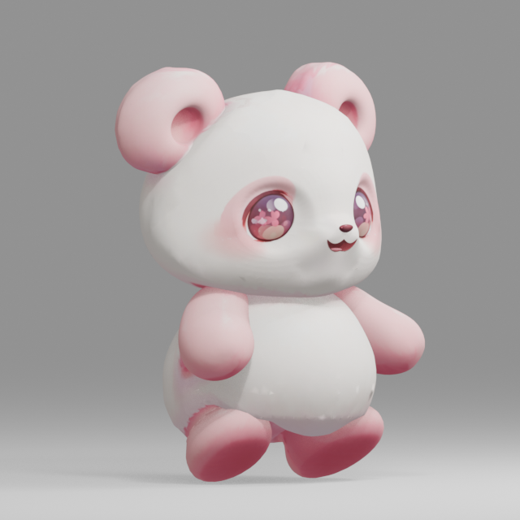
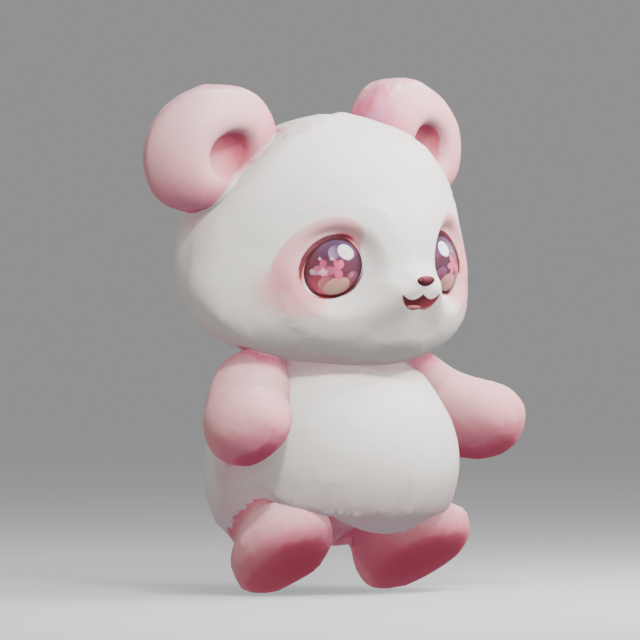
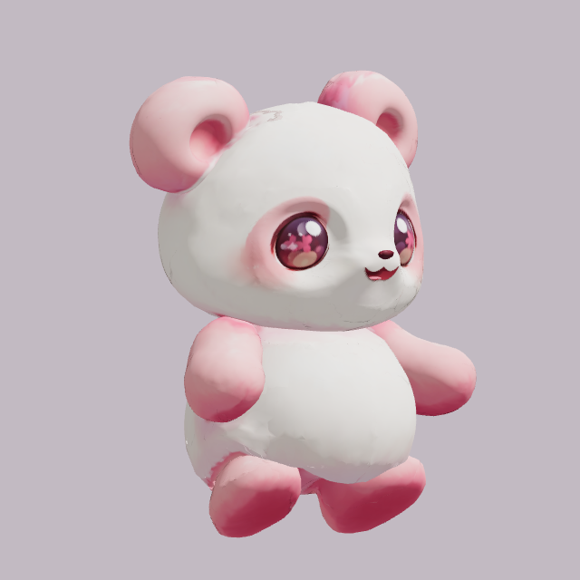
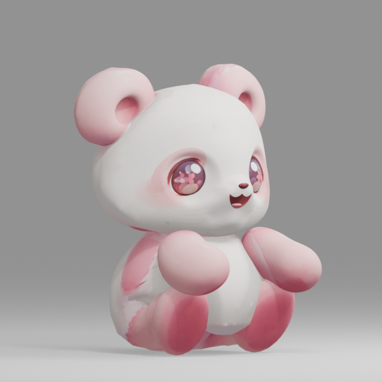
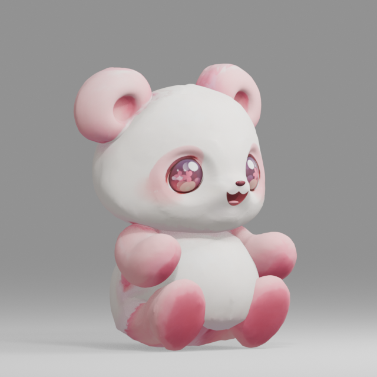
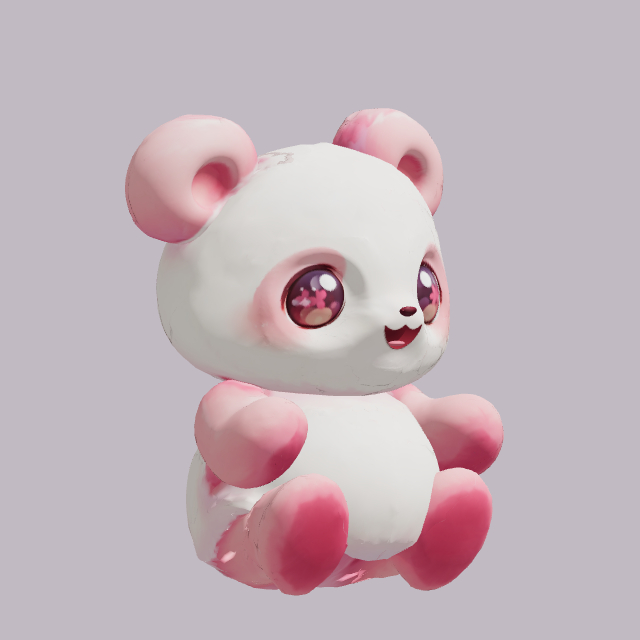
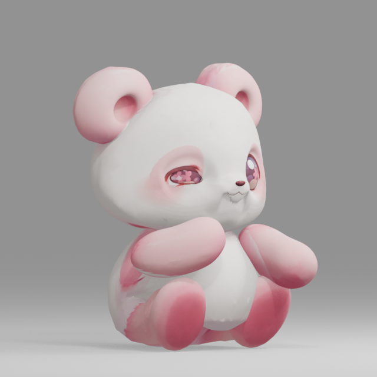
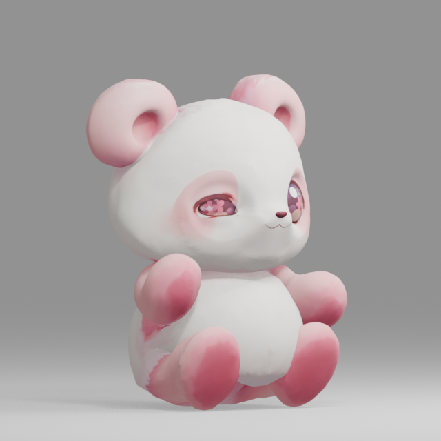
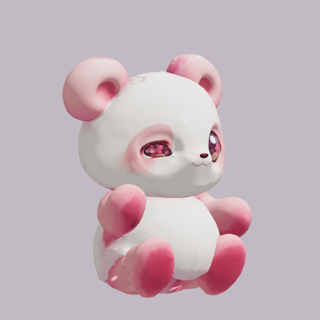

既存v004比較ページのHuman外観PASSを2026-10-17の明示指示に基づきReviewへ記録。追加の花飾り・肉球はHuman PENDING。原本置換・Motion量産HOLD、phone UNKNOWN。
判定・残項目 ／ 原因・棄却案・構造 ／ 再現 ／ hashと証拠対応
Blender/再読込GLBは実評価157枚を24fpsで収録。PCは実製品loader/controllerのMediaRecorder収録で、実時間のledgerを保存しています。プレイヤーの整数秒から単一フレームへ読み替えないでください。
左は元v003、中央はv004 author、右はv004 PC製品経路。3経路で照明が異なるため、明暗差を形状差と断定しません。









納品モデルのmaterialを変更したものではありません。影や色で隠さず、頭/耳/頬/腹/脇/背中/足/腕を確認するための表示です。意図した丸みと不要な凹凸の最終区別はHumanが判定します。
保存GLBの診断Viewer（製品経路そのものの証拠は上のPC収録とproduct-raw-controller.json）。旧arm FKの無変更再生は未対応。7 Anchor一致は接触/自然さのHuman GOを意味しません。